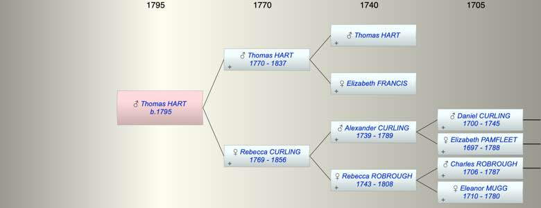

| [Index] |
| Thomas HART (1795 - ) |
|  |
| b. 1795 at Dorking |
| Parents: |
| Thomas HART (1770 - 1837) |
| Rebecca Ann CURLING (1769 - 1856) |
| Siblings (6): |
| Alexander HART (1799 - ) |
| Rebecca HART (1801 - 1801) |
| John HART (1803 - ) |
| Charles HART (1805 - ) |
| Marianna HART (1806 - ) |
| Elizabeth HART (1809 - ) |
| Events in Thomas HART (1795 - )'s life | |||||
| Date | Age | Event | Place | Notes | Src |
| 1795 | Thomas HART was born | Dorking | Note 1 | ||
| 1837 | 42 | Death of father Thomas HART (aged 67) | |||
| 1856 | 61 | Death of mother Rebecca Ann CURLING (aged 87) | Dorking | ||
| Note 1: bap 28 Aug 1795 son of Thomas and Rebecca ex FMP |
| Personal Notes: |
|
probably married Elizabeth Glover by licence 7 Jul 1819 at Dorking
1851 Attorney in Reigate with his wife and family |
| Created on a Mac™ using iFamily for Mac™ on 8 Oct 2023 |